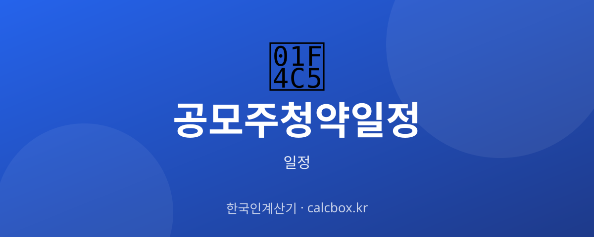

공모주 청약 일정 확인법 — IPO 청약일·환불일 챙기는 법
새내기 상장 주식에 투자하는 공모주 청약. 청약일과 환불일, 상장일이 어떤 순서로 진행되고 어디서 확인하는지 정리했습니다.

공모주 청약 일정, 무엇을 확인하나요?
공모주 청약은 기업이 상장(IPO)하며 일반 투자자에게 새 주식을 배정받을 기회를 주는 절차입니다. 일정은 대체로 수요예측 → 공모가 확정 → 청약(보통 2일) → 환불 → 상장 순으로 이어집니다.
투자자가 챙겨야 할 핵심 날짜는 청약일, 배정 결과·환불일, 상장일입니다. 청약은 증거금을 넣고 신청한 뒤, 경쟁률에 따라 배정 물량이 정해지고 남은 증거금은 환불됩니다.
최신 일정 확인하는 법
종목별 일정과 공모가, 주관 증권사는 증권사 앱(주관사)과 공모주 정보 사이트에서 확인합니다. 청약은 그 종목의 주관·인수 증권사 계좌로만 가능하니 어느 증권사인지부터 확인하세요.
가장 공식적인 근거는 금융감독원 전자공시(DART)의 증권신고서·투자설명서입니다. 여기에 청약·환불·상장 일정과 공모 조건이 기재됩니다.
- 38커뮤니케이션 등 공모주 정보 사이트
- 주관·인수 증권사 앱(청약 진행)
- 금융감독원 전자공시시스템(DART) 증권신고서
- 한국거래소(상장 일정)
중계·관람·예매 정보
청약하려면 해당 종목의 주관·인수 증권사 계좌가 미리 있어야 합니다. 신규 계좌는 개설에 시간이 걸릴 수 있어 청약일 전에 준비하세요.
청약에는 증거금이 필요하고, 배정 후 남은 금액은 환불일에 돌려받습니다. 균등배정·비례배정 방식과 청약 한도, 수수료는 증권사·종목마다 다르니 청약 전 확인이 필요합니다.
알아두면 좋은 포인트
공모주 일정은 수요예측 결과나 시장 상황에 따라 공모가·일정이 변경되거나 상장이 연기·철회되기도 합니다. 확정 일정은 정정 공시로 바뀔 수 있습니다.
상장 후 주가는 공모가보다 오를 수도, 내릴 수도 있습니다. 청약 경쟁률과 기업 가치는 다르므로 증권신고서의 사업·위험 정보를 함께 살펴보는 것이 좋습니다.
자주 묻는 질문 (FAQ)
Q. 공모주 청약 일정은 어디서 확인하나요?
종목별 청약일·공모가·주관사는 공모주 정보 사이트와 주관 증권사 앱에서 볼 수 있고, 가장 공식적인 근거는 금융감독원 전자공시(DART)의 증권신고서·투자설명서입니다.
Q. 청약은 아무 증권사에서나 할 수 있나요?
아닙니다. 그 종목의 주관·인수 증권사 계좌로만 청약할 수 있습니다. 어느 증권사가 청약을 받는지 확인하고, 계좌가 없다면 청약일 전에 미리 개설해 두어야 합니다.
Q. 청약하면 신청한 만큼 다 배정되나요?
경쟁률에 따라 배정 물량이 정해져 신청 수량보다 적게 받는 경우가 많고, 남은 증거금은 환불일에 돌려받습니다. 균등·비례 배정 방식과 청약 한도는 종목·증권사마다 다릅니다.